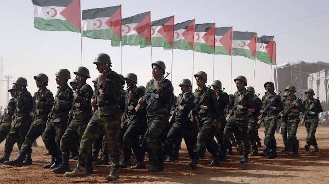

There are two main modern issues that trace back to imperialism. Both have to do with borders. The first is a debate over which parts of Morocco that were originally ruled by Spain are part of Morocco or not. That was resolved by a ceasefire in 2002 on the border, but remains contentious.
The second, larger issue, concerns a Western Saharan region that Morocco currently lays claim to. The residents of that region claim that they should be independent. For a while, there was a ceasefire, signed in 1991, preventing conflict in that area. However, just two months ago, on November 14, 2020, the Polisario Front (the independence group, pictured left) declared the ceasefire to have been broken by Moroccan troops.